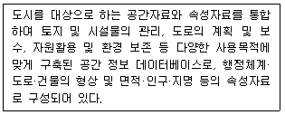
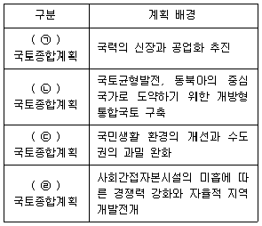
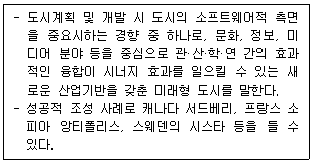
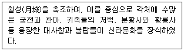
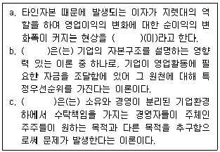
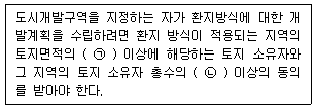
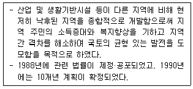
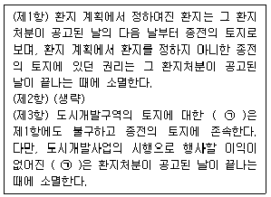
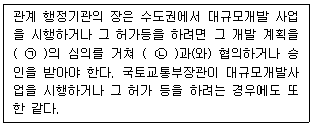

도시계획기사 (2020-06-06 기출문제)
1과목: 도시계획론
1. 우리나라의 제3차 국가GIS사업(2006∼2010)의 기본 방향에 해당하지 않는 것은?
- GIS 기반 전자정부 구현
- GIS를 이용한 뉴비즈니스 창출
- 유비쿼터스 환경을 지향한 지능형 국토건설
- 국가 공간정보의 디지털 구축 초석 마련
(정답률: 66%)

2. 다음 중 쇼버그(G. Sjoberg)가 정의한 도시의 의미로 옳은 것은?
- 지적 엘리트를 포함한 각종 비농업적 전문가가 많으며 상당한 규모의 인구와 인구밀도를 갖는 공동체
- 주민의 대부분이 공업적 또는 상업적인 영리수입에 의해 생활하고 정주하는 곳
- 농촌에 비해 전문직 종사자가 많고 인공 환경이 우월하며 인구구성의 이질성이 강한 곳
- 도시의 결정요인은 예술·문화·종교·민주적인 정치형태이며, 평등한 시민이 활기에 차 있는 곳
(정답률: 64%)
3. 계획인구의 산정 방법 중 과거 추세에 의한 방법이 아닌 것은?
- 로지스틱 곡선법
- 집단생잔법
- 지수함수법
- 최소자승법
(정답률: 60%)
4. 토지이용 관련이론 중 동심원 지대이론에 대한 설명으로 틀린 것은?
- 제3지대는 근로자 주거지대에 해당한다.
- 일반적인 구조는 5개의 동심원으로 구성된다.
- 호이트가 1939년 논문을 통해 독자적으로 전개한 이론이다.
- 도시 성장의 일반적인 과정 속에서 집중과 분산의 개념이 동시에 포함된다고 본다.
(정답률: 74%)
5. 1920년대에 르꼬르뷔제가 제안한 현대도시 계획안에서의 도시계획과 설계 이론을 구성하는 요소에 해당하지 않는 것은?
- 수직적 건물구성
- 고층 건물 사이의 충분한 녹지공간
- 보차접근의 분리
- 도시중심부의 대규모 상징적 오픈스페이스
(정답률: 55%)
6. 다음 중 아래의 설명에 해당하는 시스템은?

- UIS(Urban Information System)
- GPS(Global Positioning System)
- KLIS(Korea Land Information System)
- KOPSS(Korea Planning Support System)
(정답률: 74%)
7. 경관의 유형 구분이 틀린 것은?
- 경관자원의 특성에 따라 크게 자연경관, 인공경관으로 구분할 수 있다.
- 경관자원의 형태에 따라 점적인 형태, 선적인 형태, 면적인 형태로 구분할 수 있다.
- 경관의 대상 범위에 따라 광역적 경관, 도시적 경관, 시가지 경관, 지구적 경관으로 분류할 수 있다.
- 경관의 현상에 따라 부감경, 양감경, 수평경으로 분류 할 수 있다.
(정답률: 73%)
8. 환지방식으로 도시개발사업을 시행할 때 환지설계에 있어 환지규모를 결정하는 방법에 해당하지 않는 것은?
- 평가식
- 면적식
- 절충식
- 서열식
(정답률: 71%)
9. 옹호적 계획(Advocacy Planning)에 대한 설명이 틀린 것은?
- 다비도프(Davidoff)에 의해 주창된 옹호적 계획은 피해 구제 절차(adversary procedures)와 같은 사회제도를 계획개념으로 수용한 것이라고 할 수 있다.
- 계획의 직접적 영향을 받는 사람들조차도 무관심한 계획안으로부터 발생할 수 있는 이익을 주민의 관점에서 옹호한다.
- 이론상으로 사회는 너무 많은 차원의 가치가 혼재하고 있는 공간이기 때문에 복수의 다원적인 계획보다는 단일 계획안을 수립하는 것이 바람직하다고 본다.
- 계획이 일방적으로 공공의 이익을 규정하는 전통을 타파하는데 성공적이었다.
(정답률: 79%)
10. 우리나라 국토종합계획의 배경에 대한 아래 내용에서 ㉠∼㉣에 들어갈 말이 차례대로 모두 옳은 것은?

- ㉠ 제1차 ㉡ 제2차 ㉢ 제3차 ㉣ 제4차
- ㉠ 제1차 ㉡ 제3차 ㉢ 제4차 ㉣ 제2차
- ㉠ 제1차 ㉡ 제3차 ㉢ 제2차 ㉣ 제4차
- ㉠ 제1차 ㉡ 제4차 ㉢ 제2차 ㉣ 제3차
(정답률: 66%)
11. 용도지역에 대한 설명으로 틀린 것은?
- 국토의 계획 및 이용에 관한 법률에 따라 도시지역, 관리지역, 농림지역, 자연환경 보전지역으로 구분한다.
- 도시지역은 주거지역, 상업지역, 공업지역으로 구분한다.
- 근린지역에서의 일용품 및 서비스의 공급을 위하여 필요한 지역에 대해서 근린상업지역으로 지정이 가능하다.
- 토지의 이용 및 건축물의 용도, 건폐율, 용적률, 높이 등을 제한함으로써 토지를 경제적·효율적으로 이용하고 공공복리의 증진을 도모하기 위하여 서로 중복되지 않게 도시·군관리계획으로 결정한다.
(정답률: 66%)
12. 아래의 설명에 해당하는 것은?

- 창조적 혁신도시
- 친환경 생태도시
- 행정중심복합도시
- 도시재생
(정답률: 82%)
13. 주거, 상업, 공업 등의 용도에 따른 규제가 아니고 실제의 토지이용에 기초하여 발생하는 각종 결과를 기준으로 주변에 대한 영향에 따라 규제하고자 하는 방식은?
- 유도지역제
- 계획단위규제
- 성능지역규제
- 혼합지역제
(정답률: 65%)
14. 도시환경문제에 대한 자각에서 시작된 도시개발 개념으로 브라질의 리우데자네이루에서 개최된 UNCED를 통해 일반화된 것으로 미래 세대의 필요를 만족시키는 능력을 손상시키지 않으면서 현 세대의 필요를 만족시키는 개발 개념은?
- 지속가능한 개발
- 유비쿼터스 개발
- 성장관리적 개발
- 복합밀도형 개발
(정답률: 85%)
15. 아래의 설명에 해당하는 우리나라 신라시대의 가장 대표적인 도시는?

- 광주
- 진주
- 공주
- 경주
(정답률: 88%)
16. 도시 내 한 지역에서 통행거리를 감소시키기 위한 교통 계획 사항과 거리가 먼 것은?
- 직장과 주거기능의 적절한 혼합
- 다양한 근린시설들의 입지
- 용도지역의 철저한 분리
- 근린시설로의 접근성 제고
(정답률: 83%)
17. 로마시대의 도시계획 및 도시의 특성에 대한 설명이 옳은 것은?
- 인슐라(Insula)는 로마사회에서 특권이 높은 계층이 사는 중층의 건물로, 도괴 방지를 위해 건물의 높이를 제한하였다.
- 포럼(Forum)은 도시 외곽에 설치된 신전을 모시는 공간이다.
- 정치·경제적인 목적으로 건설된 도시 중 콜로니아(Colonia)로 불리는 도시들은 주민이 로마와 같은 시민권을 가졌다.
- 수도 로마는 지형 조건의 제약 때문에 도로와 하수도 체계를 제대로 갖추지 못했다.
(정답률: 59%)
18. 지역사회가 필요로 하는 복합사무실, 연구소, 다세대주택 등을 위한 용도로의 토지이용을 목적으로 집중 Zoning 이나 PUD(Planned Unit Development)에 있어 주로 사용하며, 조례상에는 특정한 용도지구로 설정하고 그 요건을 미리 정하지만 구체적으로 어디에 설정할 지는 유보하는 것을 의미하는 기법은?
- 계약용도지역(contract zoning)
- 조건부용도지역(conditional zoning)
- 부동지역지구(floating zoning district)
- 누적지역지구(cumulative zoning district)
(정답률: 70%)
19. 통행 기종점표에 나타난 존간 통행량의 신뢰성을 검증하기 위한 조사는?
- 쿼터라인조사
- 대중교통통행조사
- 스크린라인조사
- 보행자통행조사
(정답률: 76%)
20. 다음 중 순수공공재의 특성과 관련이 없는 것은?
- 배제의 원칙
- 공동소비
- 소비의 비경합성
- 무임승차문제
(정답률: 59%)
2과목: 도시설계 및 단지계획
21. 지구단위계획 중 특별계획구역의 지정대상에 해당하지 않는 것은?
- 순차개발하는 경우 후순위개발 대상지역
- 공공사업 시행 이외의 모든 사업에 대하여 지구단위계획구역의 지정 목적을 달성하기 위하여 필요한 경우
- 지구단위계획구역 안의 일정 지역에 대하여 우수한 설계안을 반영하기 위하여 현상설계 등을 하고자 하는 경우
- 하나의 대지 안에 여러 동의 건축물과 다양한 용도를 수용하기 위하여 특별한 건축적 프로그램을 만들어 복합적 개발을 하는 것이 필요한 경우
(정답률: 55%)
22. 광장의 결정기준에서 교통광장에 해당하지 않는 것은?
- 주요시설광장
- 지하광장
- 교차점광장
- 역전광장
(정답률: 69%)
23. 도로의 폭원을 기준으로 한 대로3류의 규모 기준이 옳은 것은?
- 12m 이상 15m 미만
- 15m 이상 20m 미만
- 20m 이상 25m 미만
- 25m 이상 30m 미만
(정답률: 67%)
24. 래드번(Radburm) 계획의 기본 원리가 아닌 것은?
- 슈퍼블럭(Super Block)을 구성하였다.
- 주택들은 쿨데삭형 가로망으로 연결되었다.
- 건물은 저층화·저밀도로 계획하였다.
- 보도와 차도의 분리가 가능하였다.
(정답률: 75%)
25. 지구단위계획구역의 지정 및 지구단위계획수립을 위해 실시하여야 하는 기초조사를 실시하지 아니할 수 있는 경우가 아닌 것은?
- 해당 지구단위계획구역이 도심지(상업지역과 상업지역에 연접한 지역)에 위치하는 경우
- 해당 지구단위계획구역의 지정목적이 해당구역을 정비 또는 관리하고자 하는 경우로서 지구단위계획의 내용에 폭 15m 이상 도로의 설치계획이 있는 경우
- 해당 지구단위계획구역이 다른 법률에 따라 지역·지구 등으로 지정되거나 개발계획이 수립된 경우
- 해당 지구단위계획구역 안의 나대지 면적이 구역 면적의 2%에 미달하는 경우
(정답률: 54%)
26. 주거형 지구단위계획에서 단독주택용지의 가구 및 획지 계획 기준으로 틀린 것은?
- 획지의 형상은 건축물의 규모와 배치, 인동간격, 높이, 토지이용, 차량동선, 녹지공간의 확보 등을 고려하여 장방형 또는 정방형의 형태를 결정하되, 가능하면 남북방향으로의 긴 장방형으로 한다.
- 단독주택용 획지로 구성된 소가구는 근린의식 형성이 용이하도록 10∼24획지내외로 구성하며 장변이 120m를 초과할 경우에는 장변 중간에 보행자도로를 삽입하는 것이 좋다.
- 대규모의 규모는 어린이 놀이터 하나를 유지하는 거리로 반경 300m를 기준으로 한다.
- 대가구내 도로계획은 단조로움과 통과교통 방지를 위하여 3지 교차도로 및 루프(loop)형 도로를 배치한다.
(정답률: 59%)
27. 도시공원 및 녹지 등에 관한 법률상 개발제한구역 및 녹지지역을 제외한 도시지역 안에 있어서의 도시공원의 확보기준은 해당 도시지역 안에 거주하는 주민 1인당 최소 얼마 이상을 기준으로 하는가?
- 2m2
- 3m2
- 4m2
- 6m2
(정답률: 57%)
28. 도시설계와 관련된 공간 척도에 대한 설명이 틀린 것은?
- 르네상스 시대의 건축가인 알베르티는 광장의 경우, 장변과 단변의 비는 2:1, 주변 건물의 높이는 광장 단변폭의 3분의 1 또는 7분의 2 이하가 적당하다고 하였다.
- 19세기 독일의 건축가 메르텐츠는 건물과 시점간의 거리(D)와 건물 높이(H)와의 비율 D/H=2, 앙각 45도에서 건축을 전체적으로 파악할 수 있다고 하였다.
- 헷지맨과 피이츠는 건물높이의 약 2배 만큼의 거리에서 보지 않으면, 건축을 전체로서 볼 수 없다고 하였다.
- 요시노부 아시하라는 도로폭보다 작은 치수의 점포폭이 반복될 때 가로는 활기에 넘친다고 하였다.
(정답률: 62%)
29. 주택건설기준 등에 관한 규정상 소음방지 대책의 수립과 관련하여 공동주택을 건설하는 지점의 소음도 기준으로 옳은 것은?
- 35 dB 미만
- 45 dB 미만
- 55 dB 미만
- 65 dB 미만
(정답률: 76%)
30. 뉴어바니즘(New Urbanism)의 원칙에 어긋나는 것은?
- 대중교통을 중심으로 지역의 성장한계를 압축적으로 조직한다.
- 도시의 밀도, 주거형태 등에 있어 다양성을 추구한다.
- 공공장소는 지역 주민의 활동과 건물의 방향을 고려하여 배치한다.
- 토지이용은 기능분리의 원칙을 적용하여 단일 용도의 개발을 추진해야 한다.
(정답률: 81%)
31. 토지이용계획을 수립함에 있어 정량적인 예측변수에 해당하지 않는 것은?
- 가구규모
- 인구규모
- 고용자수
- 생활양식의 변화
(정답률: 80%)
32. 해미드 쉬라바니(Hamid Shiravani)가 제시한 도시설계의 규범적 접근방식(cannonic approach)의 분류에 포함되지 않는 것은?
- 개괄적 방법(the synoptic method)
- 점진적 방법(the incremental method)
- 단편적 방법(the fragmental process)
- 체계적 방법(the systematic approach)
(정답률: 41%)
33. 주차장 설계 시 고려사항인 각도 주차 방식에 대한 설명이 틀린 것은?(문제 오류로 가답안 발표시 4번으로 발표되었지만 최종정답 발표시 전항 정답 처리 되었습니다. 여기서는 가답안인 4번을 누르면 정답 처리 됩니다.)
- 30° 전진주차는 차로 진행방향으로 긴 주차폭이 필요하다.
- 45° 교차식 주차형식은 1대당 최소 주차 소요면적이 작은 편이다.
- 각도주차는 주차 및 발차 시 다른 자동차의 간섭을 적게 받는다는 이점이 있다.
- 90° 전진주차의 경우, 45° 전진주차방식보다 1대당 최소 주차 소요 면적이 작다.
(정답률: 78%)
34. 해미드 쉬라바니(Hamid Shiravani)가 제시한 도시설계의 요소에 해당하지 않는 것은?
- 보존(preservation)
- 토지이용(land use)
- 환경의 질(quality of environment)
- 건물형태와 매싱(building form and massing)
(정답률: 50%)
35. 공동주택을 건설하는 주택단지하는 기간도로와 접하거나 기간도로로부터 당해 단지에 이르는 진입도로의 폭 기준이 주택단지의 총 세대주에 따라 옳게 연결된 것은?
- 300세대 미만 : 4m 이상
- 300세대 이상 500세대 미만 : 8m 이상
- 500세대 이상 1천세대 미만 : 15m 이상
- 1천세대 이상 2천세대 미만 : 20m 이상
(정답률: 58%)
36. 경관분석을 위해 구역의 넓이, 분석의 정밀도 그리도(grid)의 크기를 나누고 등급화하여 등급별 그리드 수에 의해 경관의 특색을 도출하는 경관 분석 방법은?
- 심미적 방법
- 기호화 방법
- 생태학적 방버
- 메쉬(Mesh)에 의한 방법
(정답률: 79%)
37. 등고선 간격이 2m이고, 경사독 4% 일 때 수평거리는 얼마인가?
- 5m
- 20m
- 50m
- 200m
(정답률: 65%)
38. 도보권 근린공원의 유치거리와 규모 기준이 모두 옳은 것은?
- 500m 이하, 30000m2 이상
- 500m 이하, 50000m2 이상
- 1000m 이하, 30000m2 이상
- 1000m 이하, 50000m2 이상
(정답률: 70%)
39. 공동구의 설치로 인한 이점으로 가장 거리가 먼 것은?
- 도시미관의 향상을 도모할 수 있다.
- 수용시설의 유치 관리가 용이하다.
- 매설물의 최초 설치 비용을 절감할 수 있다.
- 빈번한 노면 굴착을 방지할 수 있다.
(정답률: 77%)
40. 근린주구단위(neighborhood unit)라는 개념을 정립하고 초등학교 학구를 기준으로 하는 커뮤니티 구성을 제안한 사람은?
- C.A Perry
- G. Golany
- Ruth Glass
- Suzzane Keller
(정답률: 84%)
3과목: 도시개발론
41. 도시개발구역의 지정에 관한 내용으로 옳은 것은?
- 기초조사, 도시계획위원회의 심의, 공청회, 국토교통부장관의 승인, 고시의 순서로 이루어진다.
- 기초조사는 대통령령이 정하는 바에 따라 시행하지 아니할 수 있다.
- 도시개발구역이 지정·고시된 경우 해당 구역은 도시지역과 대통령령으로 정하는 지구단위계획구역으로 결정되어 고시된 것으로 본다.
- 도시개발구역을 지정하거나 개발계획을 변경하고자 하는 때에는 중앙도시계획위원회 또는 시·도 도시계획위원회의 심의를 거쳐야 한다.
(정답률: 45%)
42. 다음 ( )안의 내용이 순서대로 모두 옳은 것은?

- 지렛대효과, 대리인이론, 상충이론
- 지렛대효과, 자본조달순서이론, 대리인이론
- 지렛대효과, 자본조달순서이론, 상충이론
- 지렛대효과, 경영인이론, 자본조달순서이론
(정답률: 65%)
43. 토지의 혼합적 이용에 따른 장점이 아닌 것은?
- 에너지 낭비의 감소
- 도심지의 평면적 확산 방지
- 직주근접을 통한 교통난 완화
- 토지용도구분의 단순화에 따른 외부불경제 효과 감소
(정답률: 68%)
44. 아래의 ㉠과 ㉡에 들어갈 말이 모두 옳은 것은?

- ㉠ 2/3 ㉡ 2/3
- ㉠ 2/3 ㉡ 1/2
- ㉠ 1/2 ㉡ 1/2
- ㉠ 1/2 ㉡ 2/3
(정답률: 74%)
45. 수용 또는 사용방식에 비하여 환지방식이 갖는 장점으로 가장 거리가 먼 것은?
- 기존의 시설 부지를 최대한 반영할 수 있다.
- 조성 후 분양을 통한 수익을 기대할 수 있다.
- 체비지매각대금을 통하여 사업비 부담이 경감한다.
- 최소한의 사업비 투입으로 공공시설을 확보할 수 있다.
(정답률: 64%)
46. 마케팅 전략수단인 4Ps전략의 4Cs 전략으로의 전환 내용이 옳은 것은?
- 홍보(Promotion)→의사소통(Communication)
- 상품(Product)→편리성(Convenience)
- 가격(Price)→소비자(Customer)
- 장소(Place)→비용(Cost to the Customer)
(정답률: 67%)
47. 지분조달방식과 비교하여 부채조달방식이 갖는 단점으로 옳은 것은?
- 원리금 상환부담이 존재한다.
- 기업가치의 불안정으로 매매 활성화에 한계가 있다.
- 조달 규모의 증대로 소유주의 지분축소가 불가피하다.
- 자본시장의 여건에 따라 조달이 민감한 영향을 받는다.
(정답률: 61%)
48. 도시마케팅에서 필수적인 고려사항과 가장 거리가 먼 것은?
- 도시자족성
- 도시운영성과
- 도시경쟁력
- 아이디어 및 차별성
(정답률: 64%)
49. 대중교통중심개발(TOD)에 대한 설명이 틀린 것은?
- 철도역, 버스정류장 등 대중교통역과 대중교통노선의 거점을 중심으로 저밀도로 개발하여 쾌적성을 추구한다.
- 대중교통수단으로의 보행접근거리 및 시간을 단축시킴으로써 자동차에 대한 의존도를 줄일 수 있도록 한다.
- 대중교통의 이용률을 높임으로써 교통혼잡과 도시에너지 소비를 경감시킬 수 있도록 한다.
- 생태적으로 민감한 지역이나 수변지, 양질의 자연환경을 보전하기 위하여 양호한 공지의 보전을 추구한다.
(정답률: 72%)
50. 신도시의 개발 목적으로 가장 거리가 먼 것은?
- 저개발지역의 발전을 촉진하여 지역발전의 거점으로 성장시키고자 하는 경우
- 대도시에 인구나 산업의 집중을 꾀하고자 하는 경우
- 새로운 산업기지로 발전시켜 고용기회를 확대하고 주민의 소득증대를 꾀하고자 하는 경우
- 국가적 필요에 따라 신수도로 활용하기 위하여 도시를 새로 개발하는 경우
(정답률: 67%)
51. 델파이법(Delphi method)에 대한 설명이 틀린 것은?
- 조사하고자 하는 특정 사항에 대해 전문가 집단을 대상으로 반복 앙케이트를 통해 의견(직관)을 수집하는 방법이다.
- 우수한 전문가는 전문분야에 대하여 훌륭하게 전망한다는 것, 예측을 하는데 회의 방식보다 서면을 통한 앙케이트(설문)방식이 올바른 결론에 도달할 가능성이 높다는 가정을 근거로 삼는다.
- 토론의 경우 일어나기 쉬운 심리적 교란의 염려가 크다는 단점이 항시 존재한다.
- 최초의 앙케이트를 반복 수렴하므로 여러 사람의 판단이 피드백되기 때문에 결론을 의미있게 받아들일 수 있다는 장점이 있다.
(정답률: 62%)
52. 일반적으로 도시개발의 유형을 신개발과 재개발로 분류하는 기준은?
- 개발 주체에 따른 분류
- 개발 대상지의 상태에 따른 분류
- 토지의 용도에 따른 분류
- 토지의 취득방식에 따른 분류
(정답률: 69%)
53. 다음 중 도시마케팅의 고객이 아닌 것은?
- 주민
- 지방자치단체
- 투자기업
- 관광객 및 방문개
(정답률: 67%)
54. 환지계획구역의 면적이 1000m2, 보류지 면적이 400m2, 공공시설을 설치하여 시행자에게 무상귀속 되는 토지 면적이 150m2일 떄, 환지계획구역의 평균 토지부담률은 약 얼마인가?
- 19.4%
- 29.4%
- 39.4%
- 49.4%
(정답률: 52%)
55. 재개발사업의 시행 방법 중 수복재개발에 대한 설명으로 틀린 것은?
- 현재의 불량·노후 상태가 관리나 이용부실로 발생된 경우 본래의 기능을 회복하기 위하여 시행한다.
- 기존 시설을 보존하면서 노후·불량화의 요인만을 제거한다.
- 소극적인 도시재개발의 대표적인 예이다.
- 부적당한 기존 환경을 제거하고 새로운 환경으로 대체하는 전형적인 도시재개발의 유형이다.
(정답률: 60%)
56. 도시개발의 사업성 분석을 위한 분석을 위한 사업성 평가 지표 중 순현재가치(FNPV)에 관한 설명으로 옳은 것은?
- 프로젝트로부터 발생하는 할인된 전체수입을 할인된 전체 비용으로 나눈 값이다.
- 프로젝트로부터 발생하는 수입과 비용을 같게 만들어 주는 할인율이다.
- 순현재가치가 1보다 크면 프로젝트의 사업성이 있고, 1보다 작으면 프로젝트의 사업성이 없는 것으로 평가한다.
- 프로젝트로부터 발생하는 할인된 전체수입에서 할인된 전체 비용을 빼준 값이다.
(정답률: 46%)
57. 도시개발을 신개발과 재개발로 구분할 때 재개발에 대한 설명이 틀린 것은?
- 재개발은 신개발에 비해 그 절차가 간편하고 기간이 적게 걸린다.
- 재개발은 기존 시가지의 일부를 개수 혹은 재건축하고 시설을 확충하는 개발행위라고 할 수 있다.
- 재개발의 유형은 재개발 대상의 공간적 범위와 토지이용, 재개발방식 등에 따라 여러 가지로 나눌수 있다.
- 재개발의 일반적인 목적은 주거 환경을 개선함으로써 주민의 주거안정을 도모하고 공동체적 삶의 질을 향상시키는 것이다.
(정답률: 72%)
58. 재건축사업을 위한 정비계획을 수립할 수 있는 해당 지역 조건이 아닌 것은?
- 건축물의 일부가 멸실되어 붕괴나 그 밖의 안전사고의 우려가 있는 지역
- 재해 등이 발생할 경우 위해의 우려가 있어 신속히 정비사업을 추진할 필요가 있는 지역
- 노후·불량건축물의 수가 전체 건축물 수의 2분의 1이상이고, 노후·불량건축물의 연면적의 합계가 전체 건축물의 연면적 합계의 3분의 2 이상인 지역
- 노후·불량건축물로서 기존 세대수가 200세대 이상이거나 그 부지면적이 1만 제곱미터 이상인 지역
(정답률: 44%)
59. 부동산 투자 중 자본의 성격은 대출투자(debt financing)이고 운용시장의 형태는 공개시장(public market)으로 이루어지는 투자 유형은?
- 부동산 투자회사
- 상업용저당채권
- 사모부동산펀드
- 직접대출
(정답률: 47%)
60. 공업화의 진전과 교통수단의 발달 등으로 교외지역의 도시개발이 활성화되며, 이에 따라 신시가지 또는 신도시에 대한 개발수요가 높아지는 도시화의 단계는?
- 교외화 단계
- 도시화 단계
- 재도시화 단계
- 반도시화 단계
(정답률: 61%)
4과목: 국토 및 지역계획
61. 후버와 지아라타니(Hoover & Giaratani)가 주장한 전형적인 문제지역에 해당하는 설명으로 옳은 것은?
- 낙후지역은 산업화의 수준은 미약하고 인구는 과잉상태로 되어 있는 지역을 말한다.
- 침체지역은 산업화되지 않은 상태에서 인구가 집중하여 전체적인 침체를 겪는 지역이다.
- 과열성장지역은 인구는 감소하나 산업은 계속 성장하는 지역을 말한다.
- 번성지역은 인구와 산업이 급속히 성장하는 지역을 말한다.
(정답률: 43%)
62. 기반부문 고용 인구 50000명, 비기반부문 고용 인구 75000명, 총 인구수가 250000명일 때 경제기반이론에 의한 기반승수는?
- 0.75
- 1.5
- 2.5
- 5.0
(정답률: 48%)
63. 프랑스 파리권의 집중억제를 위하여 실시한 정책이 아닌 것은?
- 오스만의 파리대개조계획
- 파리 소재 대학의 지방 이전
- 신축 건물에 대한 부담금제도
- 일정 규모 이상 기업체의 신·증축 시 사전허가제 허용
(정답률: 65%)
64. 지역계획과정에서 주민 참여의 기대 효과로 가장 거리가 먼 것은?
- 주민 요구에 대한 행정책임의 면제
- 주민의 심리적 욕구충족과 주체성 회복
- 주민의 지지와 협조를 통한 집행의 효율화
- 주민요구를 통한 행정 수요 파악으로 사업의 우선순위 결정에 도움
(정답률: 75%)
65. 베버(Alfred Weber)의 공업이론지론에서 공장의 최적 입지를 결정하는 세 가지 요인에 해당하지 않는 것은?
- 소비자 규모
- 노동비
- 집적의 이익
- 운송비
(정답률: 69%)
66. 제4차 국토종합계획(2000∼2020)에서 설정한 광역권과 그 개발방향이 옳은 것은?
- 부산·울산·경남권-환동해경제권의 국제교류거점 강화
- 광주·목표권-중국 및 동남아경제권과의 국제교류거점 육성
- 대구·포항권-국제적휴양·관광 거점으로 육성
- 대전·청주권-관광문화자원을 활용한 국제자유도시 기반 조성
(정답률: 42%)
67. 다음 중 수자원의 효율적 이용 및 개발에 있어 가장 바람직한 개발 방향은?
- 경제성장을 주도하는 공업 부문의 지원을 강화하기 위하여 공업 용수원 확충을 우선 집중적으로 개발하여야 한다.
- 수계단위의 일관성 있는 종합개발에 의한 광역 용수 개발과 대단위 용수 공급망을 확충하여야 한다.
- 수자원의 이용률을 제고하기 위해 상류에 댐을 건설하는 것보다 하구언 건설을 먼저 시행하여야 한다.
- 지하수는 수자원으로 볼 수 없으므로 수자원 개발 계획에서 제외시켜도 무방하다.
(정답률: 69%)
68. 다음 중 독일의 도시계획관련 제도로 가장 적당한 것은?
- ZAC
- PUD
- F-plan과 B-pian
- Structure plan과 Local plan
(정답률: 68%)
69. 지역발전이론 중 중심지와 주변의 관계를 중요시 하며, 기술혁신의 파급 과정이 지역 성장의 기초와 밀접하다고 보는 접근법은?
- 주민중심적 개발론
- 종속이론
- 지속가능한 개발이론
- 기본수요이론
(정답률: 59%)
70. 성장거점개발론에 있어서 성장극(Growth Pole)이라는 개념을 주장한 학자는?
- William Alonso
- Hugh O. Nourse
- Francois Perroux
- Torsten Haegerstrand
(정답률: 63%)
71. A국가의 인구 센서스 결과, 1위 도시의 인구는 9백8십만명이고 5위 도시의 인구는 1백4십만명이었다. 순위규모법칙에 따른 q값은 얼마인가? (단, log5=0.7, log7=0.8 이다.)
- 0.62
- 0.88
- 1.14
- 2.67
(정답률: 52%)
72. 주거기능·상업기능·공업기능·유통물류기능·관광기능·휴양기능 등을 집중적으로 개발·정비할 필요가 있을 때 지정하는 용도지구는?
- 개발진흥지구
- 보존지구
- 시설보호지구
- 특정용도제한지구
(정답률: 74%)
73. 국토기본법에서 정한 국토관리의 기본이념으로 적합하지 않은 것은?
- 국토의 균형있는 발전
- 환경친화적인 국토관리
- 국토에 따른 사회체제의 개혁
- 경쟁력 있는 국토여건의 조성
(정답률: 76%)
74. 인구이동모형에 대한 설명으로 틀린 것은?
- 마코브모형(Markovian Models)은 인구 이동의 원인을 설명하기보다 동태적 인구 이동과정을 서술하고 그를 토대로 예측하는데 공헌하였다.
- 로리(Lowry)모형은 일반적인 경제적 변수와 중력모형의 변수를 결합한 모형으로 미국 대도시 지역 간의 인구이동을 설명하였다.
- 토다로(M. Todaro)는 도·농간 실제 소득의 차이가 인구이동을 결정한다고 분석했다.
- 모릴(Morril)은 인구이동에 미치는 비경제적 변수에 연구의 초점을 두었다.
(정답률: 46%)
75. 지역의 소득격차를 측정하는 방법 또는 지표가 아닌 것은?
- 지니계수
- 허프모형
- 로렌츠곡선
- 쿠즈네츠비
(정답률: 62%)
76. 부드빌(Boudeville)이 정의한 지역구분에 해당하지 않는 것은?
- 동질지역(homogeneous region)
- 결절지역(nodal region)
- 계획지역(planning region)
- 추진지역(propulsive region)
(정답률: 69%)
77. 결절지역(Nodal Region)내 중심지의 크기와 그 지점 간의 거리에 대한 관계를 언급한 레일리(W. T, Reilly)의 법칙에 대한 설명으로 옳은 것은?
- 두 중심 지점 간의 흐름은 그 중심 지점의 크기와 지점 간의 거리의 제곱에 비례한다.
- 두 중심 지점 간의 흐름은 그 중심 지점의 크기에 비례하고 그 지점 간의 거리의 제곱에 반비례한다.
- 두 중심 지점 간의 흐름은 그 중심 지점의 크기에 반비례하고 그 지점 간의 거리의 제곱에 비례한다.
- 두 중심 지점 간의 흐름은 그 중심 지점의 크기와 지점 간의 거리의 제곱에 반비례한다.
(정답률: 64%)
78. 아래의 설명에 해당하는 개발 계획은?

- 오지종합개발계획
- 접경지역개발계획
- 도서종합개발계획
- 개발밀도정비계획
(정답률: 63%)
79. 수도권정비계획법상 국토교통부장관이 수도권정비계획안의 입안 시 포함되는 사항이 아닌 것은? (단, 각 사항에 대한 계획의 집행 및 관리에 관한 사항과 대통령령으로 정하는 수도권 정비에 관한 사항은 고려하지 않는다.)
- 인구와 산업 등의 배치에 관한 사항
- 광역적 교통시설의 정비에 관한 사항
- 환경 보전에 관한 사항
- 개발이익의 환수 시기 및 방법에 관한 사항
(정답률: 66%)
80. 농업의 입지패턴을 통해 토지이용에 대한 최초의 규범적 이론 정립을 시도한 독일의 학자는?
- 튀넨
- 뢰쉬
- 그린허트
- 르퍼버
(정답률: 70%)
5과목: 도시계획관계법규
81. 도시개발채권에 대한 설명으로 틀린 것은?
- 지방자치단에의 장은 도시개발에 필요한 자금을 조달하기 위하여 도시개발채권을 발행할 수 있다.
- 도시개발채권의 소멸시효는 상환일부터 기산하여 원금은 2년, 이자는 5년으로 한다
- 시·도지사가 도시개발채권을 발행하려는 경우 행정안전부장관의 승인을 받아야 한다.
- 도시개발채권의 상환은 5년부터 10년까지의 범위에서 지방자치단체의 조례로 정한다.
(정답률: 50%)
82. 도시개발법령에 따라 도시개발구역의 지정대상 지역 및 규모 기준이 옳은 것은?
- 도시지역 중 주거지역 : 3만 제곱미터 이상
- 도시지역 중 공업지역 : 5만 제곱미터 이상
- 도시지역 중 자연녹지지역 : 1만 제곱미터 이상
- 도시지역 외의 지역 : 66만 제곱미터 이상
(정답률: 64%)
83. 관광진흥법상 시·도지사가 권역별 관광개발 계획의 수립 시 포함하여야 하는 사항에 해당하지 않는 것은?
- 환경보전에 관한 사항
- 관광권역(觀光圈域)의 설정에 관한 사항
- 관광자원의 보호·개발·이용·관리 등에 관한 사항
- 관광지 및 관광단지의 조성·정비·보완 등에 관한 사항
(정답률: 57%)
84. 주차장법상 ‘주차장’의 정의에 따른 종류에 해당하지 않는 것은?
- 부설주차장
- 노상주차장
- 지하주차장
- 노외주차장
(정답률: 56%)
85. 개발제한구역의 저정에 따른 매수가격의 산정을 위한 감정평가 등에 드는 비용을 부담하는 자는?
- 대통령
- 국무총리
- 국토교통부장관
- 해당 지역의 시장·군수
(정답률: 48%)
86. 주택법 및 주택법령에 따른 주택 유형에 관한 설명이 틀린 것은?
- 공동주택이라 함은 다가구주택과 아파트를 지칭한다.
- 아파트는 주택으로 쓰는 총수가 5개 층 이상인 주택을 말한다.
- 연립주택과 다세대주택은 1개 동의 바닥면적 합계 규모에 따라 구분된다.
- 다세대주택은 주택으로 쓰는 1개 동의 바닥면적 합계가 660제곱미터 이하이고, 층수가 4개 층 이하인 주택을 말한다.
(정답률: 66%)
87. 다음 중 도시개발사업의 시행자가 될 수 없는 자는?
- 국가나 지방자치단체
- 「지방공기업법」에 따라 설립된 지방공사
- 도시개발구역의 토지 소유자
- 해당 도시개발구역의 토지면적의 2분의 1 이상에 해당하는 토지 소유자와 그 구역의 토지 소유자 총수의 2분의 1 이상의 동의를 얻어 구성된 토지 소유자의 조합
(정답률: 53%)
88. 국토의 계획 및 이용에 관한 법령상 도시·군 관리계획도서 중 계획도를 작성하는 기준으로 옳은 것은?
- 축척 1천분의 1 지형도에 도시·군관리계획 사항을 명시한 도면으로 작성하여야 한다.
- 축척 6백분의 1 지형도에 도시·군관리계획 사항을 명시한 도면으로 작성하여야 한다.
- 축척 1만분의 1 지형도에 도시·군관리계획 사항을 명시한 도면으로 작성하여야 한다.
- 축척 1천2백분의 1 항공측량도에 도시·군관리계획 사항을 명시한 도면으로 작성하여야 한다.
(정답률: 53%)
89. 도시·군계획시설의 결정에 관한 기준이 틀린 것은?
- 둘 이상의 도시·군계획시설을 같은 토지에 함께 결정할 수 없다.
- 도시·군계획시설이 위치하는 지역의 적정하고 합리적인 토지이용을 촉진하기 위하여 필요한 경우에는 도시·군계획시설이 위치하는 공간의 일부만을 구획하여 도시·군계획시설결정을 할 수 있다.
- 입체적 도시·군계획시설을 설치하고자 하는 때에는 미리 토지소유자, 토지에 관한 소유권외의 권리를 가진 자 및 그 토지에 있는 물건에 관하여 소유권 그 밖의 권리를 가진 자와 구분지상권의 설정 또는 이전 등을 위한 협의를 하여야 한다.
- 건축물인 도시·군계획시설은 그 구조 및 설비가 건축법에 적합하여햐 한다.
(정답률: 61%)
90. 인구와 산업이 밀집되어 있거나 밀집이 예상되어 그 지역에 대하여 체계적인 개발·정비·보전 등이 필요한 지역에 지정하는 용도지역은?
- 관리지역
- 도시지역
- 농림지역
- 자연환경보전지역
(정답률: 48%)
91. 다른 법률에 따라 따로 계획이 수립된 도로서, 도종합계획을 수립하지 아니할 수 있는 곳은?
- 기업도시개발특별법에 따른 기업도시
- 제주특별자치도 설치 및 국제자유도시 조성을 위한 특별법에 따른 종합계호기이 수립되는 제주특별자치도
- 경제자유구역의 지정 및 운영에 관한 법률에 따른 사업계획이 수립되는 경기도
- 신행정수도 후속대책을 위한 연기·공주지역 행정중심복합도시 건설을 위한 특별법에 따른 행정중심복합도시
(정답률: 57%)
92. 도시·군계획시설 결정을 할 때, 시설의 기능 발휘를 위해 설치하는 중요한 세부시설에 대한 조성계획을 함께 결정하지 않아도 되는 것은?
- 항만
- 유원지
- 유통업무설비
- 폐기물처리시설
(정답률: 43%)
93. 도시개발법상 환지 처분의 효과와 관련한 아래 내용에서 ㉠에 공통으로 들어갈 내용으로 옳은 것은?

- 지역권
- 전세권
- 지상권
- 점유권
(정답률: 39%)
94. 산업단지의 지정 또는 변경에 관한 주민 등의 의견청취를 위한 공고가 있는 지역 및 산업단지 안에서 특별시장·광역시장·특별자치시장·특별자치도지사·시장 또는 군수의 허가를 받아야 하는 행위 대상 기준이 아닌 것은?
- 죽목의 식재
- 토지의 굴착
- 토지분할
- 이동이 용이한 물건을 3월 이상 쌓아놓는 행위
(정답률: 50%)
95. 개발밀도관리구역 지정 지역 기준이 틀린 것은?
- 당해 지역의 도로서비스 수준이 매우 낮아 차량통행이 현저하게 지체되는 지역
- 당해 지역의 도로율이 국토교통부령이 정하는 용도지역별 도로율에 20% 이상 미달하는 지역
- 향후 2년 이내에 당해 지역의 하수발생량이 하수시설의 시설용량을 초과할 것으로 예상되는 지역
- 향후 2년 이내에 당해 지역의 학생수가 학교수용능력을 50% 이상 초과할 것으로 예상되는 지역
(정답률: 53%)
96. 주택가격상승률이 물가상승률보다 현저히 높은 지역으로서 지역의 주택가격·주택거래 등과 지역 주택시장 여건 등을 고려하였을 때 주택가격이 급등하거나 급등할 우려가 있는 지역 중 대통령령으로 정하는 기준을 충족하는 지역에 대하여 지정하는 것은?
- 최저주거기준 적용 지역
- 분양가상한제 적용 지역
- 기반시설 부담금 적용 지역
- 장수명 주택 의무공급 적용 지역
(정답률: 73%)
97. 수도권정비계획법상 대규모개발사업에 대한 규제에 관하여, 아래의 ㉠과 ㉡에 들어갈 말이 모두 옳은 것은?

- ㉠ 국토교통부장관, ㉡ 수도권정비위원회
- ㉠ 수도권정비위원회, ㉡ 국토교통부장관
- ㉠ 도시계획위원회, ㉡ 시·도지사
- ㉠ 시·도지사, ㉡ 도시계획위원회
(정답률: 56%)
98. 도시공원의 설치에 관한 도시·군관리계획이 결정되었을 때, 그 도시공원의 조성계획을 입안하여야 하는 자는?
- 관할 시장 또는 군수
- 시설관리공단 이사장
- 국토교통부 장관
- 행정안전부 장관
(정답률: 69%)
99. 수도권정비계획법에 따른 인구집중유발시설의 기준이 틀린 것은?
- 「고등교육법」에 따른 학교로서 대학, 산업대학, 교육대학 또는 전문대학
- 「산업집적활성화 및 공장설립에 관한 법률」에 따른 공장으로서 건축물의 연면적이 200m2 이상인 것
- 중앙행정기관 및 그 소속 기관의 청사 중 건축물의 연면적이 1000m2 이상인 것
- 복합시설이 주용도인 건축물로서 그 연면적이 25000m2 이상인 건축물
(정답률: 59%)
100. 건축물 시행령상 공개공지등의 확보에 대한 설명으로 틀린 것은?
- 공개공지등의 면적은 대지면적의 100분의 20 이상의 범위에서 건축조례로 정한다.
- 매장문화재의 현지보존 조치 면적을 공개공지 등의 면적으로 할 수 있다.
- 연간 60일 이내의 기간 동안 건축조례로 정하는 바에 따라 주민들을 위한 문화 행사를 열거나 판촉활동을 할 수 있다.
- 모든 사람들이 환경친화적으로 편리하게 이용할 수 있도록 긴 의자 또는 조경시설 등 건축조례로 정하는 시설을 설치해야 한다.
(정답률: 46%)